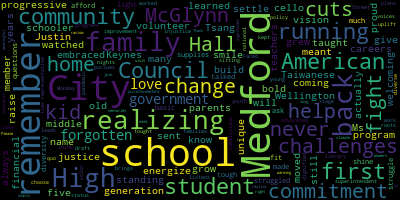

[Tseng]: My name is Justin Tsang. I'm a student, a first-generation Taiwanese-American, and a proud member of the Medford community. I'm running for City Council to energize Medford with a bold, progressive vision and a commitment to justice. This is where I grew up. Like so many in Medford, my family moved here to settle down, build their careers, and raise their kid. This will always be home to me. Wellington embraced my family and it watched me grow up. When I was five years old, my parents sent me off to the McGlynn. I still remember Ms. Keynes standing there with her welcoming smile. You know, the McGlynn actually taught me what it meant to give back to my community. I remember coming back as a middle schooler to volunteer at the after school program or to help kids with cello. This is also where I learned about Medford's challenges. I remember realizing that my family's financial challenges weren't unique. I remember realizing that our teachers struggled to afford basic school supplies. And I remember realizing that as much as we talked about diversity, students like me would struggle to fit in. Here at Medford High, I made a commitment to ask the tough questions, to shine a light on injustice, and to think change. I remember sitting in the library to draft our school's improvement plans and to help choose our first school superintendent of color. And on Monday nights, I take the 134 down High Street, down to City Hall, where I work to uplift youth voices. Ever since high school, I've kept the fight up. I've worked on policy commissions and advocated for young Americans on the national stage. Here in Medford, I fought for families and against cuts to schools. I've never forgotten my roots and I've never forgotten my love for Medford. It's this love that brings me back to City Hall. I'm running for Medford City Council because it's time we had a dignified city government that pursues progress and not the status quo. A diverse and representative city government that leads and listens. Faced with a pandemic, a warming climate, significant cuts to schools, and our centuries-long fight against racism, we need leaders that realize that meaningful structural change starts right here at home. Please join us and visit www.justinformedford.com. Thank you.
|
total time: 2.08 minutes total words: 389  |
|||
{kind=link}